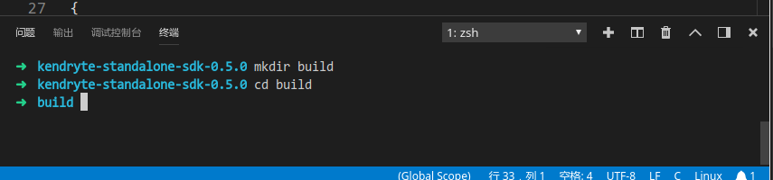
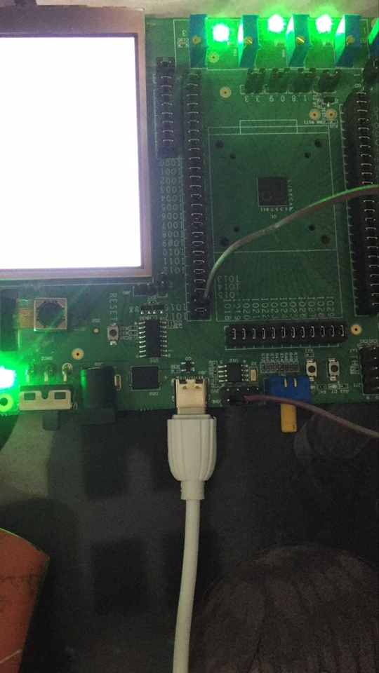

k210环境搭建_Linux
首先我使用的Deepin15.6系统,我拿到的板子是绿色的原版
我首先下载
Kendryte KD233 Board Schematic V01原理图。再下载一个
Kendryte K210 Standalone SDK裸机sdk。当然还需要一个工具链
Kendryte OpenOCD for Ubuntu x86_64以及交叉编译器
RISC-V 64bit toolchain for Kendryte K210_ubuntu_amd64
安装交叉编译器
之前我们下载了RISC-V 64bit toolchain for Kendryte K210_ubuntu_amd64交叉编译器。现在我们首先需要对他进行安装。
➜ ~ cd ~/Downloads/ # 进入你下载到文件的目录
➜ Downloads sudo tar -xvf kendryte-toolchain.tar.gz -C /opt/ # 使用-C参数将解压出来文件放入/opt目录中，大家自己随意
➜ Downloads cd /opt/kendryte-toolchain/bin # 解压完成进入目录
➜ bin realpath . # 获取当前目录路径，为了添加环境变量
/opt/kendryte-toolchain/bin
➜ bin sudo vi /etc/profile # 编辑profile文件，添加环境变量
PATH="$PATH:/opt/kendryte-toolchain/bin" # 在文件末尾添加上编译器可执行文件目录
➜ bin source /etc/profile # 同步环境变量以生效
$ riscv64-unknown-elf- # 输入riscv64 之后按tab键 出现一大串说明是安装成功了
riscv64-unknown-elf-addr2line riscv64-unknown-elf-gcov-tool
riscv64-unknown-elf-ar riscv64-unknown-elf-gdb
riscv64-unknown-elf-as riscv64-unknown-elf-gprof
riscv64-unknown-elf-c++ riscv64-unknown-elf-ld
riscv64-unknown-elf-c++filt riscv64-unknown-elf-ld.bfd
riscv64-unknown-elf-cpp riscv64-unknown-elf-nm
riscv64-unknown-elf-elfedit riscv64-unknown-elf-objcopy
riscv64-unknown-elf-g++ riscv64-unknown-elf-objdump
riscv64-unknown-elf-gcc riscv64-unknown-elf-ranlib
riscv64-unknown-elf-gcc-7.2.0 riscv64-unknown-elf-readelf
riscv64-unknown-elf-gcc-ar riscv64-unknown-elf-run
riscv64-unknown-elf-gcc-nm riscv64-unknown-elf-size
riscv64-unknown-elf-gcc-ranlib riscv64-unknown-elf-strings
riscv64-unknown-elf-gcov riscv64-unknown-elf-strip
riscv64-unknown-elf-gcov-dump
$ riscv64-unknown-elf-gcc -v # deepin下执行也是有效果的
Using built-in specs.
COLLECT_GCC=riscv64-unknown-elf-gcc
COLLECT_LTO_WRAPPER=/opt/kendryte-toolchain/bin/../libexec/gcc/riscv64-unknown-elf/7.2.0/lto-wrapper
Target: riscv64-unknown-elf
Configured with: /opt/toolchain/riscv-gnu-toolchain/riscv-gcc/configure --target=riscv64-unknown-elf --prefix=/usr/local --disable-shared --disable-threads --enable-languages=c,c++ --with-system-zlib --enable-tls --with-newlib --with-sysroot=/usr/local/riscv64-unknown-elf --with-native-system-header-dir=/include --disable-libmudflap --disable-libssp --disable-libquadmath --disable-libgomp --disable-nls --src=.././riscv-gcc --enable-checking=yes --disable-multilib --with-abi=lp64d --with-arch=rv64imafdc 'CFLAGS_FOR_TARGET=-Os -mcmodel=medany'
Thread model: single
gcc version 7.2.0 (GCC) 安装openbcd调试
➜ ~ mkdir Kendryte_K210 # 首先我在家目录下建立了一个文件用于存放本开发版相关资料
➜ ~ cd Downloads # 进入下载目录
➜ Downloads tar -xvf kendryte-openocd-0.1.3-ubuntu64.tar.gz -C ~/Kendryte_K210/ # 解压openbcd到之前建立的文件夹
➜ Downloads cd ~/Kendryte_K210/kendryte-openocd/
➜ kendryte-openocd sudo apt install libusb-dev -y # 根据openbcd的readme文件，先安装libusb库
➜ kendryte-openocd ./bin/openocd -v # 运行此命令 输出两行如下，说明可以使用
Kendryte Open On-Chip Debugger For RISC-V v0.1.3 (20180912)
Licensed under GNU GPL v2开始编译
首先我使用的vscode写代码，所以首先使用vscode打开工程目录
➜ ~ code Kendryte_K210/kendryte-standalone-sdk-0.5.0 # 启动vscode
开启图片 配置c++插件
可以看到我的图片里面有绿色波浪线，说明我的代码存在问题，这是由于没有配置好c++插件导致找不到头文件的问题。所以修改左上方的
.vscode/c_cpp_properties为：{ "configurations": [ { "name": "Linux", "includePath": [ "${workspaceFolder}/**", "${workspaceFolder}/lib/bsp/include", "${workspaceFolder}/lib/drivers/include", "/opt/kendryte-toolchain/riscv64-unknown-elf/include" //依据自己编译器安装位置修改 ], "defines": [], "compilerPath": "/opt/kendryte-toolchain/bin/riscv64-unknown-elf-gcc", "cStandard": "c11", "cppStandard": "c++17", "intelliSenseMode": "clang-x64" } ], "version": 4 }配置成功后如图，就没有错误信息了。

创建build目录
打开终端运行：
➜ kendryte-standalone-sdk-0.5.0 mkdir build ➜ kendryte-standalone-sdk-0.5.0 cd build
配置成功 生成对应工程的Makefile 因为我们已经配置过了编译器的环境变量，所以现在我们使用如下命令生成
Makefile➜ build cmake .. -DPROJ=hello_world PROJ = hello_world -- Check for RISCV toolchain ... -- Using /opt/kendryte-toolchain/bin RISCV toolchain SOURCE_FILES=/home/zqh/Kendryte_K210/kendryte-standalone-sdk-0.5.0/src/hello_world/main.c Project: hello_world LIST_FILE=/home/zqh/Kendryte_K210/kendryte-standalone-sdk-0.5.0/cmake/executable.cmake TOOLCHAIN=/opt/kendryte-toolchain/bin KENDRYTE_IDE= BUILDING_SDK=yes CMAKE_BUILD_TYPE=Debug CMAKE_C_COMPILER=/opt/kendryte-toolchain/bin/riscv64-unknown-elf-gcc CMAKE_CXX_COMPILER=/opt/kendryte-toolchain/bin/riscv64-unknown-elf-g++ CMAKE_LINKER=/opt/kendryte-toolchain/bin/riscv64-unknown-elf-ld CMAKE_OBJCOPY=/opt/kendryte-toolchain/bin/riscv64-unknown-elf-objcopy CMAKE_OBJDUMP=/opt/kendryte-toolchain/bin/riscv64-unknown-elf-objdump CMAKE_MAKE_PROGRAM=/usr/bin/make CMAKE_C_FLAGS= -mcmodel=medany -fno-common -ffunction-sections -fdata-sections -fstrict-volatile-bitfields -fno-zero-initialized-in-bss -Os -ggdb -std=gnu11 -Wno-pointer-to-int-cast -Wall -Werror=all -Wno-error= unused-function -Wno-error=unused-but-set-variable -Wno-error=unused-variable -Wno-error=deprecated-declarations -Wextra -Werror=frame-larger-than=65536 -Wno-unused-parameter -Wno-sign-compare -Wno-error=missing-b races -Wno-error=return-type -Wno-error=pointer-sign -Wno-missing-braces -Wno-strict-aliasing -Wno-implicit-fallthrough -Wno-missing-field-initializers -Wno-old-style-declaration CMAKE_CXX_FLAGS= -mcmodel=medany -fno-common -ffunction-sections -fdata-sections -fstrict-volatile-bitfields -fno-zero-initialized-in-bss -Os -ggdb -std=gnu++17 -Wall -Werror=all -Wno-error=unused-function -Wno- error=unused-but-set-variable -Wno-error=unused-variable -Wno-error=deprecated-declarations -Wextra -Werror=frame-larger-than=65536 -Wno-unused-parameter -Wno-sign-compare -Wno-error=missing-braces -Wno-error=retu rn-type -Wno-error=pointer-sign -Wno-missing-braces -Wno-strict-aliasing -Wno-implicit-fallthrough -Wno-missing-field-initializers LDFLAGS= -nostartfiles -static -Wl,--gc-sections -Wl,-static -Wl,--start-group -Wl,--whole-archive -Wl,--no-whole-archive -Wl,--end-group -Wl,-EL -T /home/zqh/Kendryte_K210/kendryte-standalone-sdk-0.5.0/lds/kend ryte.ld CMAKE_BINARY_DIR=/home/zqh/Kendryte_K210/kendryte-standalone-sdk-0.5.0/build Makefile created.出现
Makefile created.说明我们已经可以开始编译咯编译工程
依旧是在那个目录下，执行
make命令。➜ build make [ 2%] Building C object lib/CMakeFiles/kendryte.dir/bsp/entry.c.obj [ 5%] Building C object lib/CMakeFiles/kendryte.dir/bsp/entry_user.c.obj [ 8%] Building C object lib/CMakeFiles/kendryte.dir/bsp/interrupt.c.obj [ 11%] Building C object lib/CMakeFiles/kendryte.dir/bsp/printf.c.obj [ 14%] Building C object lib/CMakeFiles/kendryte.dir/bsp/sleep.c.obj [ 17%] Building C object lib/CMakeFiles/kendryte.dir/bsp/syscalls.c.obj [ 20%] Building C object lib/CMakeFiles/kendryte.dir/drivers/aes.c.obj [ 23%] Building C object lib/CMakeFiles/kendryte.dir/drivers/clint.c.obj [ 26%] Building C object lib/CMakeFiles/kendryte.dir/drivers/common.c.obj [ 29%] Building C object lib/CMakeFiles/kendryte.dir/drivers/dmac.c.obj [ 32%] Building C object lib/CMakeFiles/kendryte.dir/drivers/dvp.c.obj [ 35%] Building C object lib/CMakeFiles/kendryte.dir/drivers/fft.c.obj In file included from /home/zqh/Kendryte_K210/kendryte-standalone-sdk-0.5.0/lib/drivers/fft.c:15:0: /home/zqh/Kendryte_K210/kendryte-standalone-sdk-0.5.0/lib/drivers/include/fft.h:222:29: error: unknown type name 'dmac_channel_number_t' void fft_complex_uint16_dma(dmac_channel_number_t dma_send_channel_num, ^~~~~~~~~~~~~~~~~~~~~ /home/zqh/Kendryte_K210/kendryte-standalone-sdk-0.5.0/lib/drivers/include/fft.h:223:29: error: unknown type name 'dmac_channel_number_t' dmac_channel_number_t dma_receive_channel_num, ^~~~~~~~~~~~~~~~~~~~~ /home/zqh/Kendryte_K210/kendryte-standalone-sdk-0.5.0/lib/drivers/include/fft.h:225:52: error: unknown type name 'size_t' const uint64_t *input, size_t point_num, ^~~~~~ make[2]: *** [lib/CMakeFiles/kendryte.dir/build.make:206：lib/CMakeFiles/kendryte.dir/drivers/fft.c.obj] 错误 1 make[1]: *** [CMakeFiles/Makefile2:123：lib/CMakeFiles/kendryte.dir/all] 错误 2 make: *** [Makefile:84：all] 错误 2这里我使用的sdk是
kendryte-standalone-sdk-0.5.0，可能这个工程还是有点问题的。问题解决
这里看到错误提示为
dmac_channel_number_t未定义，我进入fft.h查看了一下，发现这个文件可能少加了个头文件。所以在/kendryte-standalone-sdk-0.5.0/lib/drivers/include/fft.h中添加一行#include "dmac.h"
修改 编译成功
现在重新运行
make命令即可编译成功。
烧录程序
此芯片暂时我只看到通过串口烧录程序的，并且由于我是linux系统，linux下串口烧录程序的文件在官网暂时没有。所以我在qq群中找到Python下载脚本。脚本内容放在最后，大家复制即可。 将脚本保存为isp_auto.revA.02.py后执行如下：
➜ build python3 isp_auto.revA.02.py -p /dev/ttyUSB0 -b 115200 hello_world.bin
[INFO] COM Port Selected Manually: /dev/ttyUSB0
[INFO] Selected Baudrate: 115200
[INFO] Trying to Enter the ISP Mode...
[INFO] Greeting Message Detected, Start Downloading ISP
Downloading ISP: |██████████████████████████████████████████████████| 100.0% Complete
[INFO] Booting From 0x80000000
[INFO] Wait For 1sec for ISP to Boot
[INFO] Boot to Flashmode Successfully
[INFO] Selected Flash: On-Board
Downloading Program: |██████████████████████████████████████████████████| 100.0% Complete
[INFO] Rebooting...提示 如果是黑色板子，那么没有问题，但是我这个是绿色板子初代版本，自动下载电路没有完善，所以需要手动拉低boot。 我们需要将IO16的跳线帽拔掉，并且在靠近芯片那一端接一根线出来连接到GND，然后按一下RESET！！，进入isp模式，才可以下载程序。 如图所示： 
运行效果
现在我们打开串口调试助手，重启板子，就可以看到串口输出啦～～ 
附件
isp_auto.revA.02.py
#!env python3
import sys
BASH_TIPS = dict(NORMAL='\033[0m',BOLD='\033[1m',DIM='\033[2m',UNDERLINE='\033[4m',
DEFAULT='\033[39', RED='\033[31m', YELLOW='\033[33m', GREEN='\033[32m',
BG_DEFAULT='\033[49m', BG_WHITE='\033[107m')
ERROR_MSG = BASH_TIPS['RED']+BASH_TIPS['BOLD']+'[ERROR]'+BASH_TIPS['NORMAL']
WARN_MSG = BASH_TIPS['YELLOW']+BASH_TIPS['BOLD']+'[WARN]'+BASH_TIPS['NORMAL']
INFO_MSG = BASH_TIPS['GREEN']+BASH_TIPS['BOLD']+'[INFO]'+BASH_TIPS['NORMAL']
VID_LIST_FOR_AUTO_LOOKUP = "(1A86)|(0403)|(067B)|(10C4)"
# WCH FTDI PL CL
timeout = 0.5
class TimeoutError(Exception): pass
import time
import zlib
try:
import serial
import serial.tools.list_ports
except ImportError:
print(ERROR_MSG,'PySerial must be installed, run '+BASH_TIPS['GREEN']+'`pip3 install pyserial`',BASH_TIPS['DEFAULT'])
sys.exit(1)
try:
if sys.platform != 'win32':
from Crypto.Cipher import AES
except ImportError:
print(ERROR_MSG,'Crypto must be installed, run '+BASH_TIPS['GREEN']+'`pip3 install crypto`',BASH_TIPS['DEFAULT'])
sys.exit(1)
import struct
from enum import Enum
import binascii
import hashlib
import argparse
import time, math
ISP_PROG = ''
ISP_PROG = binascii.unhexlify(ISP_PROG)
#print('ISP_FLASH progam size (compressed)', len(ISP_PROG))
ISP_PROG = zlib.decompress(ISP_PROG)
#print('ISP_FLASH progam size (decompressed)', len(ISP_PROG))
def printProgressBar (iteration, total, prefix = '', suffix = '', decimals = 1, length = 100, fill = '█'):
"""
Call in a loop to create terminal progress bar
@params:
iteration - Required : current iteration (Int)
total - Required : total iterations (Int)
prefix - Optional : prefix string (Str)
suffix - Optional : suffix string (Str)
decimals - Optional : positive number of decimals in percent complete (Int)
length - Optional : character length of bar (Int)
fill - Optional : bar fill character (Str)
"""
percent = ("{0:." + str(decimals) + "f}").format(100 * (iteration / float(total)))
filledLength = int(length * iteration // total)
bar = fill * filledLength + '-' * (length - filledLength)
print('\r%s |%s| %s%% %s' % (prefix, bar, percent, suffix), end = '\r')
# Print New Line on Complete
if iteration == total:
print()
def slip_reader(port):
partial_packet = None
in_escape = False
while True:
waiting = port.inWaiting()
read_bytes = port.read(1 if waiting == 0 else waiting)
if read_bytes == b'':
raise Exception("Timed out waiting for packet %s" % ("header" if partial_packet is None else "content"))
for b in read_bytes:
if type(b) is int:
b = bytes([b]) # python 2/3 compat
if partial_packet is None: # waiting for packet header
if b == b'\xc0':
partial_packet = b""
else:
raise Exception('Invalid head of packet (%r)' % b)
elif in_escape: # part-way through escape sequence
in_escape = False
if b == b'\xdc':
partial_packet += b'\xc0'
elif b == b'\xdd':
partial_packet += b'\xdb'
else:
raise Exception('Invalid SLIP escape (%r%r)' % (b'\xdb', b))
elif b == b'\xdb': # start of escape sequence
in_escape = True
elif b == b'\xc0': # end of packet
yield partial_packet
partial_packet = None
else: # normal byte in packet
partial_packet += b
class ISPResponse:
class ISPOperation(Enum):
ISP_ECHO = 0xC1
ISP_NOP = 0xC2
ISP_MEMORY_WRITE = 0xC3
ISP_MEMORY_READ = 0xC4
ISP_MEMORY_BOOT = 0xC5
ISP_DEBUG_INFO = 0xD1
class ErrorCode(Enum):
ISP_RET_DEFAULT = 0
ISP_RET_OK = 0xE0
ISP_RET_BAD_DATA_LEN = 0xE1
ISP_RET_BAD_DATA_CHECKSUM = 0xE2
ISP_RET_INVALID_COMMAND = 0xE3
@staticmethod
def parse(data):
op = data[0]
reason = data[1]
text = ''
try:
if ISPResponse.ISPOperation(op) == ISPResponse.ISPOperation.ISP_DEBUG_INFO:
text = data[2:].decode()
except ValueError:
print('Warning: recv unknown op', op)
return (op, reason, text)
class FlashModeResponse:
class Operation(Enum):
ISP_DEBUG_INFO = 0xD1
ISP_NOP = 0xD2
ISP_FLASH_ERASE = 0xD3
ISP_FLASH_WRITE = 0xD4
ISP_REBOOT = 0xD5
ISP_UARTHS_BAUDRATE_SET = 0xD6
FLASHMODE_FLASH_INIT = 0xD7
class ErrorCode(Enum):
ISP_RET_DEFAULT = 0
ISP_RET_OK = 0xE0
ISP_RET_BAD_DATA_LEN = 0xE1
ISP_RET_BAD_DATA_CHECKSUM = 0xE2
ISP_RET_INVALID_COMMAND = 0xE3
@staticmethod
def parse(data):
op = data[0]
reason = data[1]
text = ''
if FlashModeResponse.Operation(op) == FlashModeResponse.Operation.ISP_DEBUG_INFO:
text = data[2:].decode()
return (op, reason, text)
def chunks(l, n):
"""Yield successive n-sized chunks from l."""
for i in range(0, len(l), n):
yield l[i:i + n]
class MAIXLoader:
def change_baudrate(self, baudrate):
self._port = serial.Serial(
port=port,
baudrate=baudrate,
parity=serial.PARITY_NONE,
stopbits=serial.STOPBITS_ONE,
bytesize=serial.EIGHTBITS,
timeout=0.1
)
def __init__(self, port='/dev/ttyUSB1', baudrate=115200):
# configure the serial connections (the parameters differs on the device you are connecting to)
self._port = serial.Serial(
port=port,
baudrate=baudrate,
parity=serial.PARITY_NONE,
stopbits=serial.STOPBITS_ONE,
bytesize=serial.EIGHTBITS,
timeout=0.1
)
print(INFO_MSG,"Selected Baudrate: ",baudrate, BASH_TIPS['DEFAULT'])
self._port.isOpen()
self._slip_reader = slip_reader(self._port)
""" Read a SLIP packet from the serial port """
def read(self):
return next(self._slip_reader)
""" Write bytes to the serial port while performing SLIP escaping """
def write(self, packet):
buf = b'\xc0' \
+ (packet.replace(b'\xdb', b'\xdb\xdd').replace(b'\xc0', b'\xdb\xdc')) \
+ b'\xc0'
#print('[WRITE]', binascii.hexlify(buf))
return self._port.write(buf)
def read_loop(self):
out = b''
# while self._port.inWaiting() > 0:
# out += self._port.read(1)
# print(out)
while 1:
sys.stdout.write('[RECV] raw data: ')
sys.stdout.write(binascii.hexlify(self._port.read(1)).decode())
sys.stdout.flush()
def recv_one_return(self):
timeout_init = time.time()
data = b''
# find start boarder
#sys.stdout.write('[RECV one return] raw data: ')
while 1:
if time.time() - timeout_init > timeout:
raise TimeoutError
c = self._port.read(1)
#sys.stdout.write(binascii.hexlify(c).decode())
sys.stdout.flush()
if c == b'\xc0':
break
in_escape = False
while 1:
if time.time() - timeout_init > timeout:
raise TimeoutError
c = self._port.read(1)
#sys.stdout.write(binascii.hexlify(c).decode())
sys.stdout.flush()
if c == b'\xc0':
break
elif in_escape: # part-way through escape sequence
in_escape = False
if c == b'\xdc':
data += b'\xc0'
elif c == b'\xdd':
data += b'\xdb'
else:
raise Exception('Invalid SLIP escape (%r%r)' % (b'\xdb', b))
elif c == b'\xdb': # start of escape sequence
in_escape = True
data += c
#sys.stdout.write('\n')
return data
def reset_to_isp_kd233(self):
self._port.dtr = False
self._port.rts = False
time.sleep(0.01)
#print('-- RESET to LOW, IO16 to HIGH --')
# Pull reset down and keep 10ms
self._port.dtr = True
self._port.rts = False
time.sleep(0.01)
#print('-- IO16 to LOW, RESET to HIGH --')
# Pull IO16 to low and release reset
self._port.rts = True
self._port.dtr = False
time.sleep(0.01)
def reset_to_isp_dan(self):
self._port.dtr = False
self._port.rts = False
time.sleep(0.01)
#print('-- RESET to LOW, IO16 to HIGH --')
# Pull reset down and keep 10ms
self._port.dtr = False
self._port.rts = True
time.sleep(0.01)
#print('-- IO16 to LOW, RESET to HIGH --')
# Pull IO16 to low and release reset
self._port.rts = False
self._port.dtr = True
time.sleep(0.01)
def reset_to_boot(self):
self._port.dtr = False
self._port.rts = False
time.sleep(0.01)
#print('-- RESET to LOW --')
# Pull reset down and keep 10ms
self._port.dtr = True
self._port.rts = False
time.sleep(0.01)
#print('-- RESET to HIGH, BOOT --')
# Pull IO16 to low and release reset
self._port.rts = False
self._port.dtr = False
time.sleep(0.01)
def greeting(self):
self._port.write(b'\xc0\xc2\x00\x00\x00\x00\x00\x00\x00\x00\x00\x00\x00\x00\xc0')
op, reason, text = ISPResponse.parse(self.recv_one_return())
#print('MAIX return op:', ISPResponse.ISPOperation(op).name, 'reason:', ISPResponse.ErrorCode(reason).name)
def flash_greeting(self):
while 1:
self._port.write(b'\xc0\xd2\x00\x00\x00\x00\x00\x00\x00\x00\x00\x00\x00\x00\xc0')
op, reason, text = FlashModeResponse.parse(self.recv_one_return())
#print('MAIX return op:', FlashModeResponse.Operation(op).name, 'reason:',
# FlashModeResponse.ErrorCode(reason).name)
if FlashModeResponse.Operation(op) == FlashModeResponse.Operation.ISP_NOP:
print(INFO_MSG,"Boot to Flashmode Successfully",BASH_TIPS['DEFAULT'])
break
print('wait 1 sec')
time.sleep(1)
def boot(self, address=0x80000000):
print(INFO_MSG,"Booting From " + hex(address),BASH_TIPS['DEFAULT'])
out = struct.pack('II', address, 0)
crc32_checksum = struct.pack('I', binascii.crc32(out) & 0xFFFFFFFF)
out = struct.pack('HH', 0xc5, 0x00) + crc32_checksum + out # op: ISP_MEMORY_WRITE: 0xc3
self.write(out)
def recv_debug(self):
op, reason, text = ISPResponse.parse(self.recv_one_return())
#print('[RECV] op:', ISPResponse.ISPOperation(op).name, 'reason:', ISPResponse.ErrorCode(reason).name)
if text:
print('-' * 30)
print(text)
print('-' * 30)
if ISPResponse.ErrorCode(reason) not in (ISPResponse.ErrorCode.ISP_RET_DEFAULT, ISPResponse.ErrorCode.ISP_RET_OK):
print('Failed, retry, errcode=', hex(reason))
return False
return True
def flash_recv_debug(self):
op, reason, text = FlashModeResponse.parse(self.recv_one_return())
#print('[Flash-RECV] op:', FlashModeResponse.Operation(op).name, 'reason:',
# FlashModeResponse.ErrorCode(reason).name)
if text:
print('-' * 30)
print(text)
print('-' * 30)
if FlashModeResponse.ErrorCode(reason) not in (FlashModeResponse.ErrorCode.ISP_RET_OK, FlashModeResponse.ErrorCode.ISP_RET_OK):
print('Failed, retry')
return False
return True
def init_flash(self, chip_type):
chip_type = int(chip_type)
print(INFO_MSG,"Selected Flash: ",("In-Chip", "On-Board")[chip_type],BASH_TIPS['DEFAULT'])
out = struct.pack('II', chip_type, 0)
crc32_checksum = struct.pack('I', binascii.crc32(out) & 0xFFFFFFFF)
out = struct.pack('HH', 0xd7, 0x00) + crc32_checksum + out
sent = self.write(out)
op, reason, text = FlashModeResponse.parse(self.recv_one_return())
#print('MAIX return op:', FlashModeResponse.Operation(op).name, 'reason:',
# FlashModeResponse.ErrorCode(reason).name)
def flash_dataframe(self, data, address=0x80000000):
DATAFRAME_SIZE = 1024
data_chunks = chunks(data, DATAFRAME_SIZE)
#print('[DEBUG] flash dataframe | data length:', len(data))
total_chunk = math.ceil(len(data)/DATAFRAME_SIZE)
for n, chunk in enumerate(data_chunks):
while 1:
#print('[INFO] sending chunk', i, '@address', hex(address), 'chunklen', len(chunk))
out = struct.pack('II', address, len(chunk))
crc32_checksum = struct.pack('I', binascii.crc32(out + chunk) & 0xFFFFFFFF)
out = struct.pack('HH', 0xc3, 0x00) + crc32_checksum + out + chunk # op: ISP_MEMORY_WRITE: 0xc3
sent = self.write(out)
#print('[INFO]', 'sent', sent, 'bytes', 'checksum', binascii.hexlify(crc32_checksum).decode())
address += len(chunk)
if self.recv_debug():
break
printProgressBar(n+1, total_chunk, prefix = 'Downloading ISP:', suffix = 'Complete', length = 50)
def dump_to_flash(self, data, address=0):
'''
typedef struct __attribute__((packed)) {
uint8_t op;
int32_t checksum; // 下面的所有字段都要参与checksum的计算
uint32_t address;
uint32_t data_len;
uint8_t data_buf[1024];
} isp_request_t;
'''
DATAFRAME_SIZE = 4096
data_chunks = chunks(data, DATAFRAME_SIZE)
#print('[DEBUG] flash dataframe | data length:', len(data))
for n, chunk in enumerate(data_chunks):
#print('[INFO] sending chunk', i, '@address', hex(address))
out = struct.pack('II', address, len(chunk))
crc32_checksum = struct.pack('I', binascii.crc32(out + chunk) & 0xFFFFFFFF)
out = struct.pack('HH', 0xd4, 0x00) + crc32_checksum + out + chunk
#print("[$$$$]", binascii.hexlify(out[:32]).decode())
sent = self.write(out)
#print('[INFO]', 'sent', sent, 'bytes', 'checksum', crc32_checksum)
self.flash_recv_debug()
address += len(chunk)
def flash_erase(self):
#print('[DEBUG] erasing spi flash.')
self._port.write(b'\xc0\xd3\x00\x00\x00\x00\x00\x00\x00\x00\x00\x00\x00\x00\xc0')
op, reason, text = FlashModeResponse.parse(self.recv_one_return())
#print('MAIX return op:', FlashModeResponse.Operation(op).name, 'reason:',
# FlashModeResponse.ErrorCode(reason).name)
def install_flash_bootloader(self, data):
# 1. 刷入 flash bootloader
self.flash_dataframe(data, address=0x80000000)
def flash_firmware(self, firmware_bin: bytes, aes_key: bytes = None):
#print('[DEBUG] flash_firmware DEBUG: aeskey=', aes_key)
# 固件加上头
# 格式: SHA256(after)(32bytes) + AES_CIPHER_FLAG (1byte) + firmware_size(4bytes) + firmware_data
aes_cipher_flag = b'\x01' if aes_key else b'\x00'
# 加密
if aes_key:
firmware_bin = AES.new(key=aes_key, mode=AES.MODE_CBC, iv=b'\x00' * 16).encrypt(firmware_bin)
firmware_len = len(firmware_bin)
total_chunk = math.ceil(firmware_len/4096)
data = aes_cipher_flag + struct.pack('I', firmware_len) + firmware_bin
sha256_hash = hashlib.sha256(data).digest()
firmware_with_header = data + sha256_hash
# 3. 分片刷入固件
data_chunks = chunks(firmware_with_header, 4096) # 4kb for a sector
for n, chunk in enumerate(data_chunks):
chunk = chunk.ljust(4096, b'\x00') # align by 4kb
# 3.1 刷入一个dataframe
#print('[INFO]', 'Write firmware data piece')
self.dump_to_flash(chunk, address=n * 4096)
printProgressBar(n+1, total_chunk, prefix = 'Downloading Program:', suffix = 'Complete', length = 50)
if __name__ == '__main__':
parser = argparse.ArgumentParser()
parser.add_argument("-p", "--port", help="COM Port", default="DEFAULT")
parser.add_argument("-c", "--chip", help="SPI Flash type, 1 for in-chip, 0 for on-board", default=1)
parser.add_argument("-b", "--baudrate", type=int, help="UART baudrate for uploading firmware", default=115200)
parser.add_argument("-l", "--bootloader", help="bootloader bin path", required=False, default=None)
parser.add_argument("-k", "--key", help="AES key in hex, if you need encrypt your firmware.", required=False, default=None)
parser.add_argument("-v", "--verbose", help="increase output verbosity", default=False,
action="store_true")
parser.add_argument("firmware", help="firmware bin path")
args = parser.parse_args()
if args.port == "DEFAULT":
try:
list_port_info = next(serial.tools.list_ports.grep(VID_LIST_FOR_AUTO_LOOKUP)) #Take the first one within the list
print(INFO_MSG,"COM Port Auto Detected, Selected ",list_port_info.device,BASH_TIPS['DEFAULT'])
_port = list_port_info.device
except StopIteration:
print(ERROR_MSG,"No vaild COM Port found in Auto Detect, Check Your Connection or Specify One by"+BASH_TIPS['GREEN']+'`--port/-p`',BASH_TIPS['DEFAULT'])
sys.exit(1)
else:
_port = args.port
print(INFO_MSG,"COM Port Selected Manually: ",_port,BASH_TIPS['DEFAULT'])
loader = MAIXLoader(port=_port, baudrate=args.baudrate)
# 1. Greeting.
print(INFO_MSG,"Trying to Enter the ISP Mode...",BASH_TIPS['DEFAULT'])
retryCount = 0
while 1:
retryCount = retryCount + 1
if retryCount > 15:
print("\n" + ERROR_MSG,"No vaild Kendryte K210 found in Auto Detect, Check Your Connection or Specify One by"+BASH_TIPS['GREEN']+'`-p '+('/dev/ttyUSB0', 'COM3')[sys.platform == 'win32']+'`',BASH_TIPS['DEFAULT'])
sys.exit(1)
try:
print('.', end='')
loader.reset_to_isp_dan()
loader.greeting()
break
except TimeoutError:
pass
try:
print('_', end='')
loader.reset_to_isp_kd233()
loader.greeting()
break
except TimeoutError:
pass
timeout = 3
print()
print(INFO_MSG,"Greeting Message Detected, Start Downloading ISP",BASH_TIPS['DEFAULT'])
# 2. flash bootloader and firmware
firmware_bin = open(args.firmware, 'rb')
# install bootloader at 0x80000000
if args.bootloader:
loader.install_flash_bootloader(open(args.bootloader, 'rb').read())
else:
loader.install_flash_bootloader(ISP_PROG)
loader.boot()
print(INFO_MSG,"Wait For 1sec for ISP to Boot",BASH_TIPS['DEFAULT'])
time.sleep(2)
loader.flash_greeting()
loader.init_flash(args.chip)
if args.key:
aes_key = binascii.a2b_hex(args.key)
if len(aes_key) != 16:
raise ValueError('AES key must by 16 bytes')
loader.flash_firmware(firmware_bin.read(), aes_key=aes_key)
else:
loader.flash_firmware(firmware_bin.read())
# 3. boot
loader.reset_to_boot()
print(INFO_MSG,"Rebooting...",BASH_TIPS['DEFAULT'])
try:
while 1:
out = b''
while loader._port.inWaiting() > 0:
out += loader._port.read(1)
print("".join(map(chr, out)), end='')
except KeyboardInterrupt:
sys.exit(0)